创建ASP.NET Core项目
打开Visual Studio 2019，点击创建项目，选择ASP.NET Core Web 应用程序。
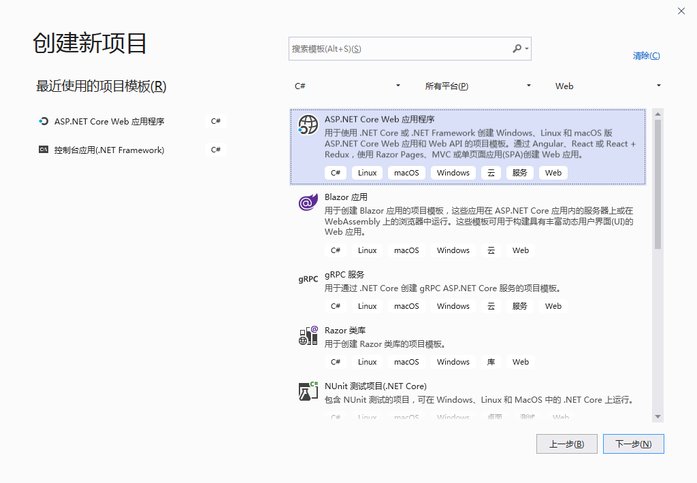
点击编辑项目文件，可以看到项目的框架是.NET Core 3.0。
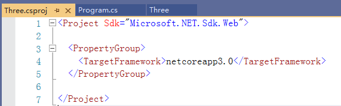
项目结构
ASP.NET Core项目的本质是一个.NET Core控制台项目，项目结构如下。
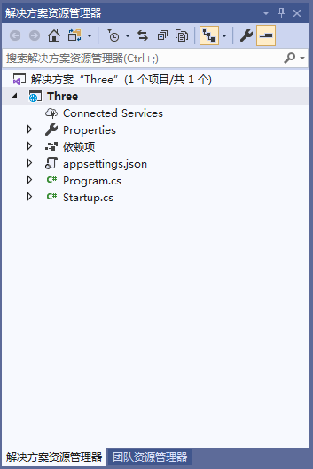
Program类
public class Program |
Main方法：程序执行的入口，配置整个应用并运行。
CreateHostBuilder方法：调用CreateDefaultBuilder方法，对WebHost进行配置，如处理配置文件、路由等。
Startup类
public class Startup |
Startup类用于相对动态的配置（相对CreateHostBuilder）。
调用顺序：先调用ConfigureServices，再调用Configure。
ConfigureServices：负责配置依赖注入相关内容。
Configure：配置了ASP.NET Core处理HTTP请求的管道（注册中间件）。
DI依赖注入
IOC容器
当应用程序启动时，一些类型会在容器中进行注册。这些类型称为服务（services）。注册之后，其他的类型或它本身，都可以向IOC容器请求这些注册的实例。另外，注册的时候可以设定这些实例的生命周期。
生命周期
Transient：services每次被请求时生成新的实例。
Scoped：一次web请求产生一个实例，web请求处理完生命周期结束。
Singleton：实例一旦被创建，所有请求使用同一个实例，直到应用程序停止。
注册MVC服务
例：通过依赖注入注册一个MVC服务。
public void ConfigureServices(IServiceCollection services) |
注册自定义服务
项目右键，新建文件夹Services，在Services下新建接口IClock。
public interface IClock |
新建ChinaClock实现IClock接口。
public class ChinaClock : IClock |
新建UtcClock实现IClock接口。
public class UtcClock : IClock |
在Startup类中注册ChinaClock服务。
public void ConfigureServices(IServiceCollection services) |
使用服务
项目右键，添加文件夹Controllers，在Controllers下新建类HomeController。
public class HomeController : Controller |
DI的优点
- 解耦，没有强依赖，利于单元测试。
- 不需要了解具体的服务类。
- 也不需要管理服务类的生命周期。
ASP.NET Core管道
ASP.NET Core管道（pipeline）可以指定应用程序如何响应HTTP请求。
原理：ASP.NET Core从浏览器接收到HTTP请求，请求从浏览器进入管道，处理完后从管道回去。我们把管道中间的，可以处理请求的内容称为中间件，如MVC、Auth等。
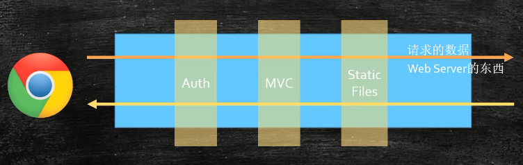
路由
端点endpoint
端点就是进来的HTTP请求的url结尾的那部分，这部分会被中间件进行处理。如：
// /{controller}/{action} |
路由中间件
在ASP.NET Core 3.0， 路由中间件从MVC中被分离出来，单独作为一个中间件使用。
多种ASP.NET Core应用都需要使用路由中间件。
- MVC：/Home/Index
- Razor Pages：/SomePage
- SignalR：/Hub/Chat
配置路由的方式：有两种方法。一种是在Controller前加上Attribure，另一种是配置路由模板。
例：在Configure类中注册路由中间件以及配置路由模板。
public void Configure(IApplicationBuilder app, IWebHostEnvironment env) |
其他中间件
其他web应用需要使用的中间件，如静态文件和身份认证中间件。注意中间件的注册顺序很重要，中间件注册的顺序就是HTTP请求在管道中处理的顺序。
public void Configure(IApplicationBuilder app, IWebHostEnvironment env) |
运行ASP.NET Core应用
有两种方式运行。第一种是通过IIS Express（不推荐），第二种是运行ASP.NET Core应用（控制台）。推荐使用第二种。
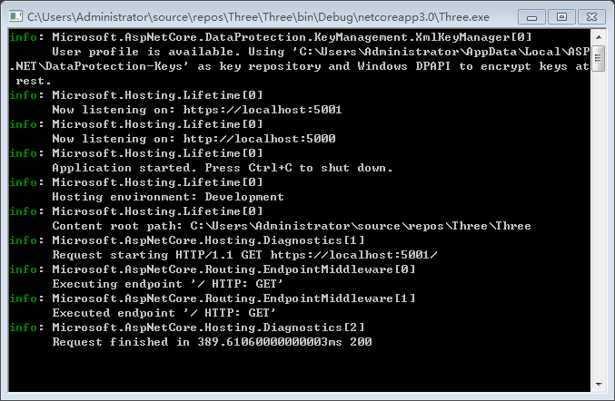
配置运行的方式
有两种方式可以修改项目相关配置。
- 项目右键，点击属性，选择调试。
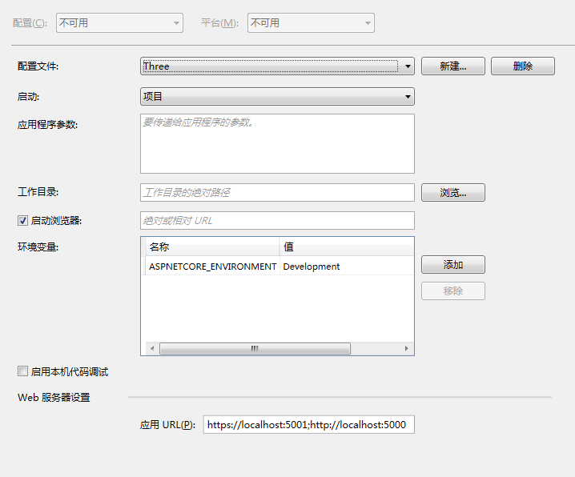
打开项目文件夹，Properties目录下的launchSettings.json文件（项目中不可见），该文件对应上面的配置内容。
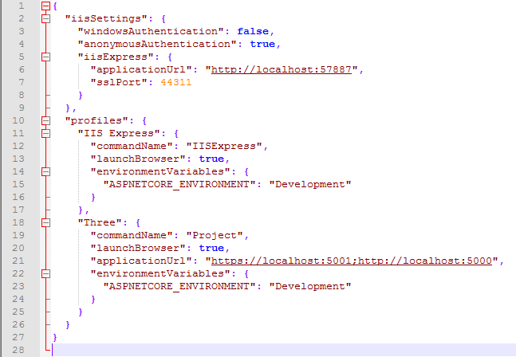
如果不需要使用IIS Express，可以删除IIS的相关配置。
设置环境变量
通过修改环境变量ASPNETCORE_ENVIRONMENT，可以在Startup类的Configure方法中判断不同的环境。
例：自定义环境变量。
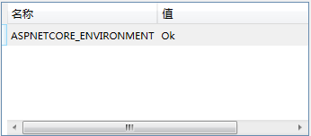
public void Configure(IApplicationBuilder app, IWebHostEnvironment env) |
环境配置方法
ASP.NET Core可以根据不同的配置环境，写不同的配置方法。
例：使用ConfigureDevelopment配置开发环境。
public void ConfigureDevelopment(IApplicationBuilder app, IWebHostEnvironment env) |
注意：ConfigureServices方法和Startup类，也可以使用这种约定名称来配置环境方法或环境类。
静态文件
wwwroot文件夹
wwwroot文件夹是一个特殊的文件夹，用于存放静态文件，如javascript、css、图片、字体等。
项目右键，添加wwwroot文件夹，在wwwroot下添加images文件夹，在images下添加图片。

运行项目，在地址栏输入localhost:5001/images/ae86.jpg，即可看到图片。
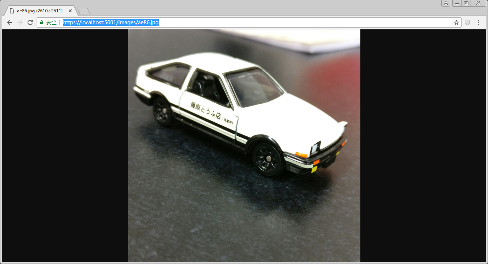
注意：由于配置中使用UseStaticFiles方法注册了静态文件中间件，否则无法获取静态资源。
包管理
- 服务器端（后端）：Nuget
- 前端：Npm
通过Npm安装Bootstrap
项目右键，添加npm配置文件。
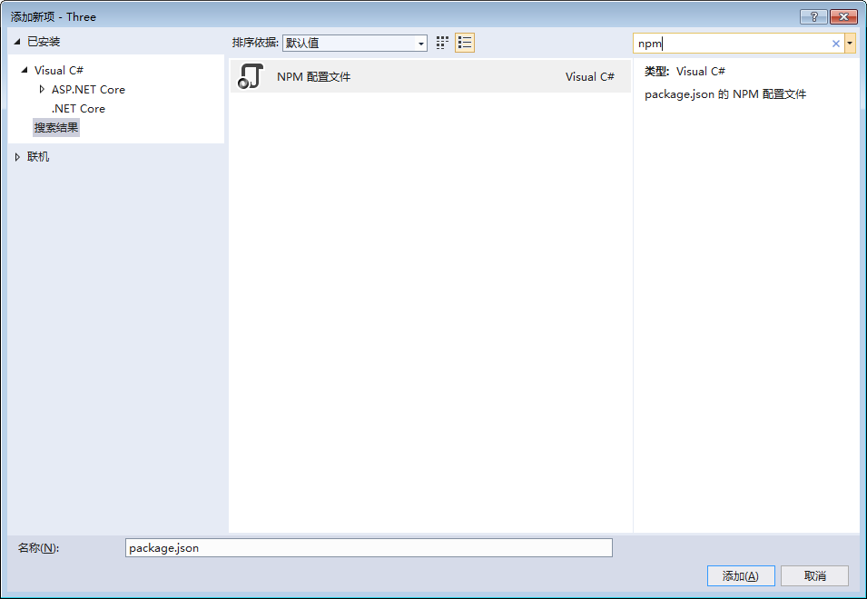
在配置文件中，添加bootstrap，选择最新版本，保存的时候自动安装。
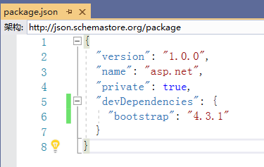
安装完成后，可以在项目路径的node_modules目录下，看到安装好的Bootstrap（项目中不可见）。
注意：如果删除bootstrap，只需要在json文件中删除，保存后会自动删除对应的包和目录。
通过libman安装Bootstrap
libman是Visual Studio自带的工具。
项目右键，添加客户端库，提供程序选择unpkg，库输入bootstrap@4.3.1，确认目标位置，安装。
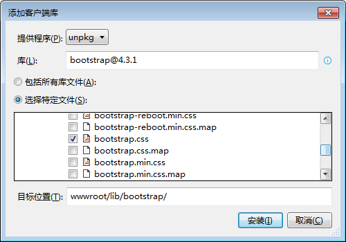
安装完成后，有如下改变：
- 把文件添加到指定的目录中。
- 项目中增加了一个libman.json文件。
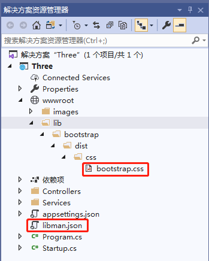
合并和压缩css
在wwwroot下创建css文件夹，在css下添加site.css。
使用bundle合并
项目右键，新建bundleconfig.json文件，配置以下内容。
[ |
第一项：把site.css和bootstrap.css合并为all.min.css。
第二项：把bootstrap.css移动到wwwroot/css/bootstrap.css，并使用minify工具压缩。
通过Nuget安装BuildBundlerMinifier包
项目右键，点击管理Nuget程序包，把BuildBundlerMinifier安装到项目中。点击rebuild项目。
看到目录下有对应的文件了。
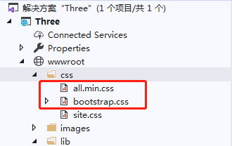